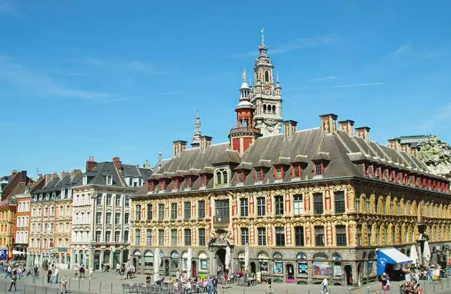

Fazer turismo na Ásia é fascinante, pois é o destino que muitos viajantes escolhem para vivenciar um verdadeiro choque cultural. As religiões, a gastronomia típica, os costumes e a maneira de viver dos asiáticos, contrastam bastante com o estilo de vida do ocidente são fatores que atraem turistas de todas as partes do planeta, principalmente europeus. E mesmo entre os 55 países deste que é o maior continente do mundo, tanto em área quanto em população, há muitos contrastes. E isso vai além das paisagens e etnias, tem a ver com costumes, crenças, além do desenvolvimento diferente entre cada um deles.
O Egito é um grande exemplo das diferenças culturais entre os países africanos. Povoado por uma das civilizações mais antigas do mundo, que cultuavam os faraós, os gatos, diversas divindades e ainda construíam pirâmides para ser a última morada dos seus chefes supremos, o Egito atrai muitos viajantes de todo o mundo curiosos sobre os costumes antigos e também sobre a construção das belas pirâmides. Por isso, Cairo, a capital do Egito é o principal destino turístico do país. A cidade, por si só já é bem caótica e soma-se a isso os milhares de viajantes o ano inteiro para aumentar ainda mais o caos. Mas, vale a pena enfrentar a “bagunça” para conhecer sua história e, claro, as Pirâmides de Gizé, além das antiguidades do Museu do Cairo.
Europa
A França e, especial sua capital, Paris, é o sonho de consumo da maior parte dos viajantes. É que o país, além da sua capital charmosa e da gastronomia requintada, possui várias regiões imperdíveis para turismo. Como, por exemplo, a Normandia, Alcácia, Cote D’Azur, Bordeaux e Borgonha costumam agradar muito aos turistas. Sem falar da Córsega, uma ilha paradisíaca pertencente à França. Mas, vamos começar por Paris, a Cidade Luz! Muito charmosa, a capital tem diversos atrativos como a famosíssima e muito fotografada Torre Eiffel, a Champ de Mars, o Arco do Triunfo, a Champs-Élysées. E a Catedral de Notre-Dame, o Palácio de Versalhes, os jardins das Tulherias e de Luxemburgo, entre outros pontos turísticos de Paris. Além de muitos museus, como o do Louvre, e vários parques.